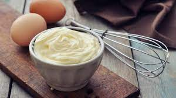

Mayonnaise

Description
Whoa! Mayonnaise so creamy, yum!
Ingredients
- 1 Egg Yolk
- 1/2 Teaspoons Salt
- 1/2 Teaspoon Dry Mustard
- 2 Pinches Sugar
- 2 Teaspoons Fresh Squeezed Lemon Juice
- 1 Tablespoon White Wine Vinegar
- 1 Cup Safflower Oil
Steps
- Whisk Together Egg Yolk and Dry Ingredients
- Combine Lemon and vinegar together thoroughly and whisk half of the mixture into the egg yolks.
- Whisk the yolk mixture briskly while slowly adding the oil a few drops at a time
- Once the liquid begins to thicken increased the oil flow to a small stream
- Once half the oil is added, add the rest of the lemon juice mixture
- Continue whisking until all of the oil is incorporated. Leave at room temperature 1-2 hours then refrigerate for up to 1 week